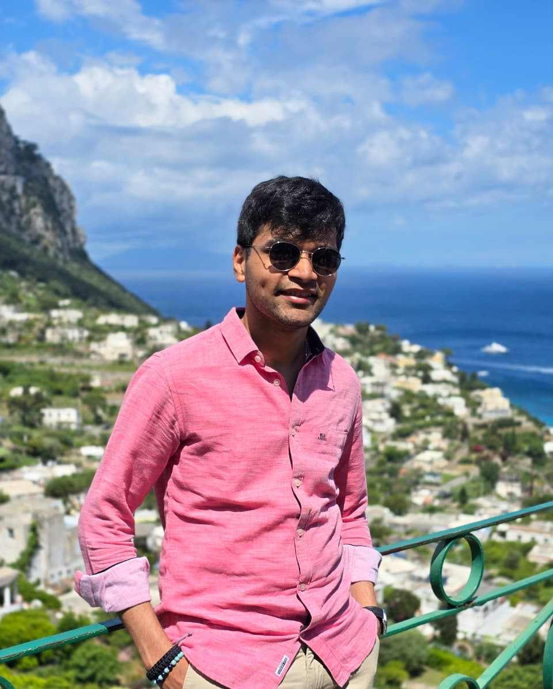

Data scientist and M.Sc. candidate at TU Hamburg, building production forecasting and LLM systems at Hapag-Lloyd. I work where time-series forecasting, commercial strategy and applied GenAI collide, turning noisy internal and macroeconomic signals into forecasts, briefings and decisions that steer real revenue (and yes, they hold up on the backtest).
Professional Experience
Education & Research
Master's studies with a focus on AI, big-data analytics and causal data science, done alongside my role at Hapag-Lloyd.
Bachelor's in computer engineering. CGPA 8.86 / 10.0 (German equivalent 1.5). Originally from Mumbai, India.
Thesis & research (click to expand)
Projects
Skills & Tools
About Me

I'm a Data Science M.Sc. candidate at TU Hamburg with two years inside Hapag-Lloyd's commercial engine, where my forecasting models and GenAI tools don't just sit in a notebook feeling clever. They reach trade managers, directors and dashboards, and help decide how a global carrier prices and moves cargo. The part I enjoy most is the messy middle: the gap between raw, contradictory data and a decision someone is willing to stake real money on.
My work lives at the intersection of time-series forecasting, commercial strategy and applied GenAI: panel models and gradient boosting on one side, multi-agent LLM pipelines on the other, with interpretability (SHAP, driver attribution, stability analysis) keeping everyone honest. I care less about the fanciest model and more about the one a business will actually trust, understand and use.
Away from the forecasts, I recharge on the move and in good company: cooking for friends, hiking somewhere with no signal, travelling to a new city, and disappearing into a good book. Curiosity is the throughline, whether the subject is a freight index or a mountain trail.
Why Me
My models and LLM tools run in production and get used by commercial teams. I've shipped, deployed on Databricks, cut a load time by 86%, and owned the boring-but-critical last mile everyone quietly hopes someone else will do.
I don't hand over black boxes. Walk-forward validation instead of tidy random splits, SHAP-based driver attribution, and stability analysis. If a model can't explain itself, it doesn't get to make decisions.
Fluent in Python and in "so what does this actually mean for Q3?". I translate commercial questions into analytical products and present to non-technical directors. A model only matters if the business trusts and uses it.
PRISMA-standard research discipline, published work, and two years inside a German enterprise. Based in Hamburg, German at B1 and climbing, and available for full-time work right now. No relocation cliffhanger, no notice period drama.
Get In Touch
Available now for full-time Data Scientist and Applied ML roles: forecasting, applied GenAI, or anywhere uncertainty needs to become a decision. If something here resonated, or you just want to argue about model interpretability, say hello.
hemantparakh93@gmail.com